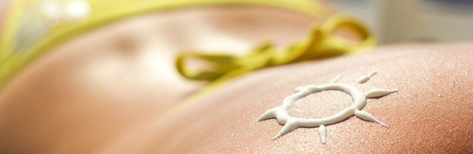

Salud
PROTECTORES SOLARES 100% NATURALES

Gentileza Gardenias, Belleza Natural
Comienzo de año, vacaciones, calor, mucho calor… sol radiante que quema la piel… Exacto: la solución es usar bloqueadores pero, ¡vaya paradoja! muchos de los protectores solares que se venden para protegernos del tan temido cáncer de piel, contienen químicos que –muchas veces- están acusados de cancerígenos…
¿Qué hacer? Prepararlos en casa es una buena opción.
alimentos con antioxidantes naturales:
Entre las Frutas podemos nombrar a las frutillas, arándanos, frambuesas y cerezas. Como Legumbres tenemos a los frijoles y porotos, y los Frutos secos como las nueces.
Además… el Consumo de vitamina C disminuye lesiones en la piel ante la exposición al sol. A comer Naranja, limón, brócoli, tomate, perejil, kiwi…
DATO: Los bloqueadores industriales en su mayoría contienen retinol palmitato u oxibenzona, entre otros componentes acusados de nocivos para la salud.
CUIDADO: Las cremas preparadas en casa generalmente contendrán un FPS de medio a bajo, por lo que hay que tener en cuenta otros cuidados como evitar las horas de mayor sol.
otros tips a la hora de tomar sol:
• Evitar las horas centrales del día.
• Buscar los espacios de sombra.
• Cubrir el cuerpo con telas claras y frescas en las horas difíciles. Sombrero o pañuelos en la cabeza marcan la diferencia!
• Realizar una exposición progresiva para que la piel se acostumbre.
• Consumir alimentos antioxidantes como hortalizas y frutas. Cuanto menos procesados sean mejor!
• Si te mojás o transpirás mucho colocar protector en forma más asidua.
manos a la obra:
INGREDIENTE BASE: Aceites Vegetales. No es que vayamos a freírnos al sol, esa es una práctica muy usada en décadas anteriores y que demostró su nefasto resultado en pieles quemadas. Es esencial usar aceite virgen puro, 100% natural, mejor si es extraído en frío…
IMPORTANTE: Cuanto más procesado sea el aceite, menor será la capacidad protectora.
ingredientes opcionales:
- ACEITES ESENCIALES. Entre 20 y 60 gotas por cada 100 ml. de aceite vegetal es lo ideal. El más beneficiosos es el aceite esencial de zanahoria (de semillas), ya que ofrece un mayor factor de protección (entre 38 y 40 FPS).
OJO! No uses aceites esenciales de cítricos porque pueden aumentar la fotosensibilidad.
IMPORTANTE: Las cremas naturales deben aplicarse 20 minutos antes de salir al sol y repetir la aplicación cada 40 minutos.
RECETA:
protector solar de almendras y coco
INGREDIENTES:
- ½ taza de aceite de almendra
- ¼ taza de aceite de coco
- ¼ taza de cera de abejas
- 2 cucharadas de óxido de zinc (hay quienes no recomiendan usar esta sustancia)
- 1 cucharadita de aceite de vitamina E
factor protector solar según su origen:
Sabías que… el FPS marca el tiempo de exposición (mayor o menor) al sol? Pero no significa más protección!
Aceite de almendras FPS 4Aceite de jojoba PFS 4Aceite de ricino FPS 5Aceite de oliva FPS 7Aceite de coco FPS 7Aceite de avellana FPS 10
¿Y ahora?
- 1) En una jarra grande mezclar el aceite de almendras, el de coco, la cera de abejas y el aceite de vitamina E.
- 2) Calentar a baño de maría hasta que se derrita. Mezclar de vez en cuando durante este proceso.
- 3) Sumar el óxido de zinc. Agitar bien y reservar en un frasco en la heladera.
Los niños y el sol
• La exposición al sol debe ser por períodos cortos, especialmente al comienzo de la primavera y el verano.
• Los niños con pieles muy sensibles necesitan, además de la crema protectora, llevar remera y gorro aún en el agua.
• Lo ideal es comenzar con una exposición progresiva, utilizando un protector solar de cosmética natural.
• Las pieles claras son más sensibles, por lo que debe tenerse mayor cuidado. Las pieles más oscuras pueden ser más resistentes pero no por ello están exentas de sufrir por la falta de cuidados. Es indispensable utilizar protección solar adecuada cualquiera sea el tipo y color de piel.
• Luego de una exposición prolongada, es recomendable utilizar una crema hidratante y beber suficiente líquido para mantener la hidratación también por dentro.